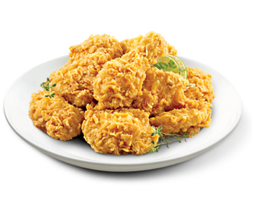

제가 가장 좋아하는 치킨은 치킨신드롬과 처갓집입니다. 처갓집은 양념치킨과 슈프림치킨이 유명하고, 치킨신드롬은 허니데리치킨과 레드핫치킨이 유명합니다. 저는 치킨신드롬의 허니데리 반, 레드핫 반의 조합을 아주 좋아합니다. 그리고 치킨이 많은 사랑을 받는 이유 중 하나는 다른 음식들과 조화를 잘 이룬다는 것인데요, 치킨과 불닭볶음면의 조화는 환상적이라고 할 수 있습니다.
여러분들이 가장 좋아하는 치킨은 무엇인가요? 교촌치킨이 가장 인기가 많은 것 같은데, 사실 저는 별로 좋아하지 않습니다. 맛이 아니라 브랜드를요. 배달음식의 배달료를 높인 주범이기 때문이죠. 너무 재수없지 않나요? 맛있는 건 인정하지만 다들 불매해줬으면 좋겠어요.
개인취향 존중하고요, 그럼 치킨 중 가장 대표적이고 또 대중적인 치킨 두 가지를 알아보겠습니다. 바로 치킨계의 양대산맥, 후라이드치킨과 양념치킨입니다.